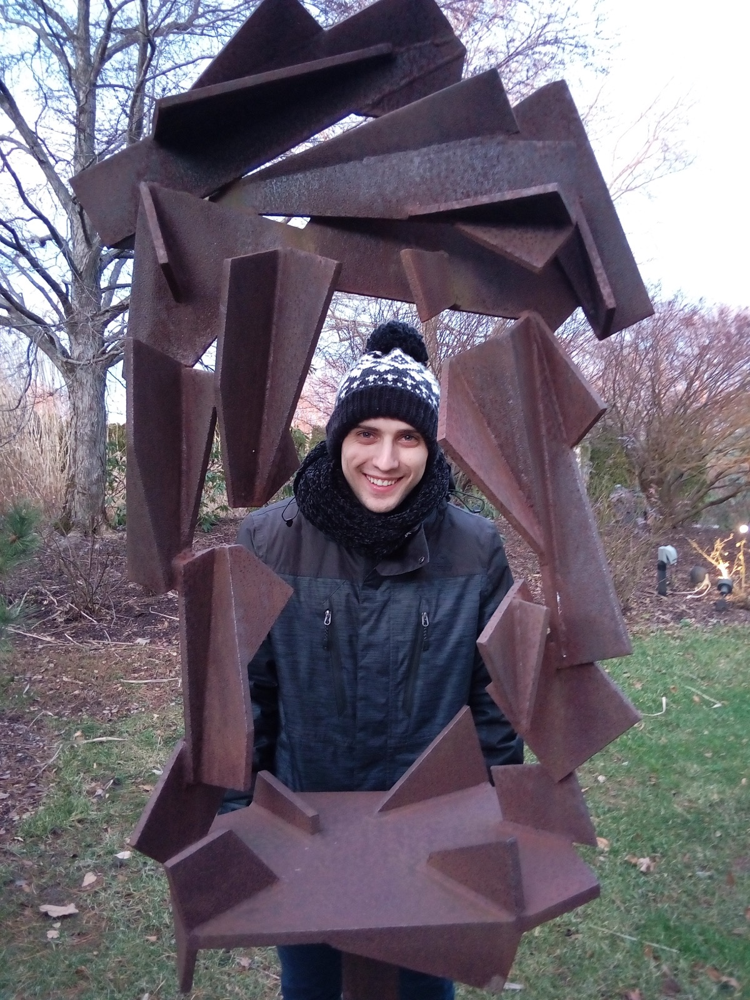

Understand before automating
Good software begins with the actual process, its edge cases, and the people who rely on it.
About me
I’m a Ukrainian software engineer based in Highland Park, New Jersey. I enjoy work that asks me to understand a complicated process, make it clearer, and build something dependable around it.

How I work
Good software begins with the actual process, its edge cases, and the people who rely on it.
Legacy systems often encode years of business knowledge. I preserve that behavior while improving how the system is built and used.
Design, implementation, testing, release, monitoring, and clear communication are parts of one responsibility.
Beyond the screen
Outside software, I play electric and classical guitar, draw with pen and ink, paint in watercolor, and write. I’m drawn to the craft behind games—their art, sound, systems, and stories—and to science fiction, fantasy, philosophy, museums, and architecture.
I also value staying active through strength training, running, cycling, and swimming. That mix of technical depth, creative practice, and movement keeps my thinking fresh.
Get in touch
If my experience and approach sound useful to your team, I’d be glad to hear what you’re building.